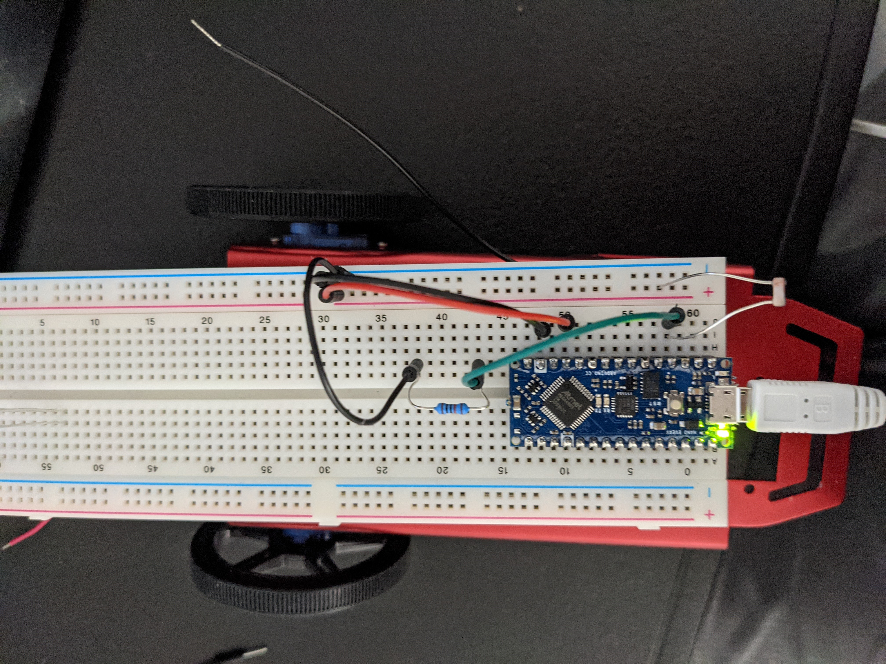
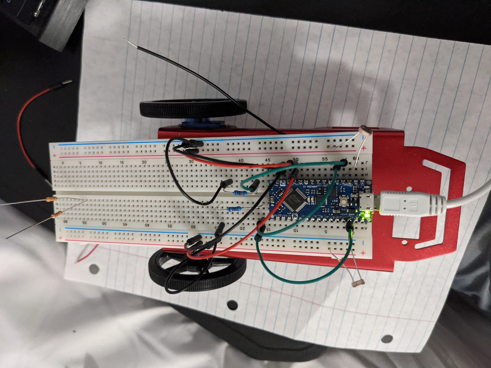

Objectives
- Learn to program the Arduino
- Use photoresistors in conjunction with the Arduino
- Create a light sensing protocol that is adaptable to various light environments
Determining Reference Voltage of the Arduino Nano Every
 Result of the ADC reading an analog signal
Result of the ADC reading an analog signal
The Arduino does an ADC when measuring the analog voltage fed into an analog pin. When measuring the voltage, a simple test revealed that the 5V output was being used as the reference voltage. In more detail, the control bit for the ADC can be read and displays what reference voltage is being used.
The Circuit
 Diagram of the voltage divider used in measuring light in the Arduino's environment. Here, R1 is a 10kOhm resistor.
Diagram of the voltage divider used in measuring light in the Arduino's environment. Here, R1 is a 10kOhm resistor.
The circuit above is what was used to measure the light environment of the Arduino. 2 Photoresistors are placed on opposite ends (left and right) of the Arduino and facing away from each other. This allows the Arduino to 'see' in two different directions and make decisions based on the brightness of the light impinging on both sensors. It is also important to note that the resistor value chosen, limits the output voltage (Vout) to within [0,1023] from the ADC. Below are two pictures of the assembled circuit.
  Constructed circuits on the Arduino breadboard. Pin A0 is connected to the right-facing CdS photoresistor and the lef-facing photoresistor is connected to pin A1When the light impinging on the photoresistor is lessened or dimmed, the resistance of the circuit increases, resulting in a lower value on the pin. This can be seen in the graph below, which can be found in the